Chapter 4 Explore the data
Before one starts with the actual modeling it is crucial to get to know the data and to bring it to the correct format. This process of getting familiar with the data is well known as Exploratory Data Analysis (EDA). To do this many packages are used.[6–9, 10, 11, 12] The most important ones will be loaded below.
library(tidyverse) # general data handling tools
library(tidymodels) # data modeling and preprocessing
# color palettes
library(viridis)
library(viridisLite)
library(patchwork) # composing of ggplots4.1 Burnout data
The data is from the machine learning challenge bla from Kaggle. https://www.kaggle.com/blurredmachine/are-your-employees-burning-out?select=train.csv
burnout_data <- read_csv("_data/burn_out_train.csv")
colnames(burnout_data) <- tolower(
stringr::str_replace_all(
colnames(burnout_data),
" ",
"_"
))
# omit missing values in the outcome variable
burnout_data <- burnout_data[!is.na(burnout_data$burn_rate),]4.1.1 Train-test split
set.seed(2)
burnout_split <- rsample::initial_split(burnout_data, prop = 0.80)
burnout_train <- rsample::training(burnout_split)
burnout_test <- rsample::testing(burnout_split)The training data set contains 17301 rows and 9 variables.
The test data set contains 4325 observations and naturally also 9 variables.
First look at the classes of the variables.
| column | class |
|---|---|
| employee_id | character |
| date_of_joining | Date |
| gender | character |
| company_type | character |
| wfh_setup_available | character |
| designation | numeric |
| resource_allocation | numeric |
| mental_fatigue_score | numeric |
| burn_rate | numeric |
A general visualization to detect missing values.

# percentage of missing values in the training data set
mean(rowSums(is.na(burnout_train)) > 0)## [1] 0.1407433As we know that XGBoost can handle missing values we do not have to be concerned. Although one can think about imputation. But more on that later.
What about the outcome variable?
burn_rate: For each employee telling the rate of burnout should be in \([0,1]\). The greater the score the worse the burnout. As the variable is continuous we have a regression task.
The five point summary below shows that the full range is covered and no not allowed values are in the data.
## Min. 1st Qu. Median Mean 3rd Qu. Max.
## 0.0000 0.3100 0.4500 0.4513 0.5900 1.0000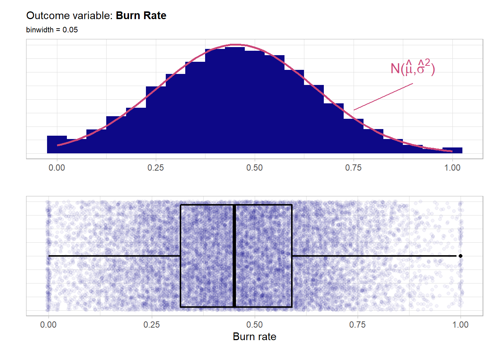
The distribution of the outcome is very much symmetrical and bell shaped around 0.5 and the whole defined region \([0,1]\) is quite well covered.
Look at every feature and its main effects individually:
employee_id is just an ID variable and thus is not useful for any prediction model. But one has to check for duplicates.
burnout_train %>%
group_by(employee_id) %>%
summarise(n = n()) %>%
nrow() == nrow(burnout_train)## [1] TRUEThus there are no duplicates which is good.
date_of_joining is the Date the employee has joined the company. Thus a continuous variable that most likely needs some kind of feature engineering.
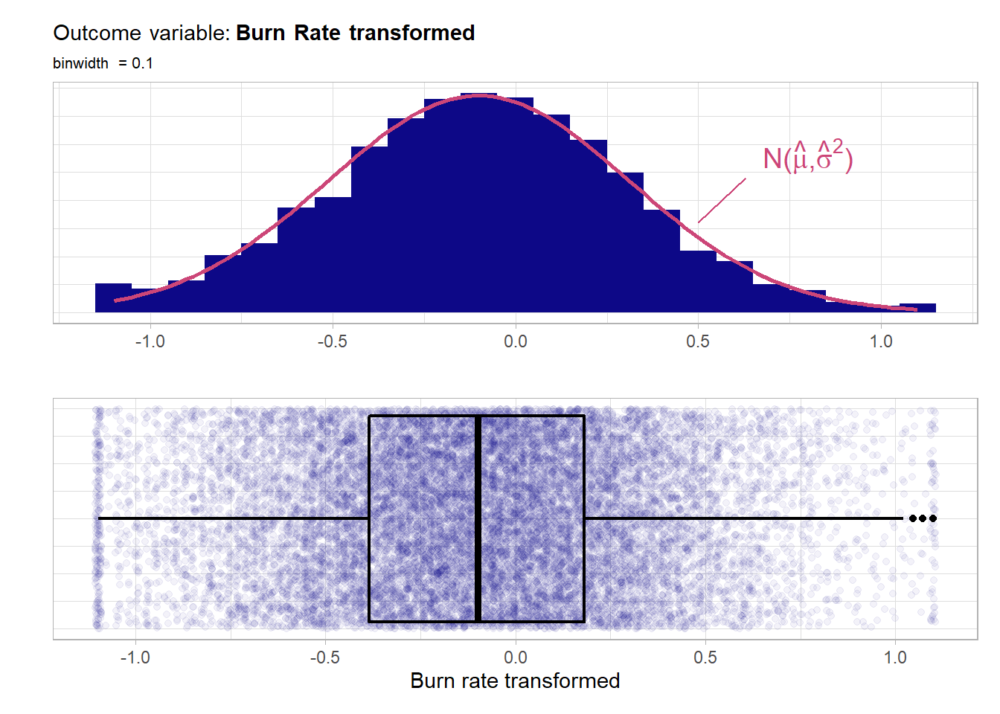
Although there is a lot of variation no major trends in hirings are visible from this plot. Overall the variable seems to be quite equally distributed over the year 2008.
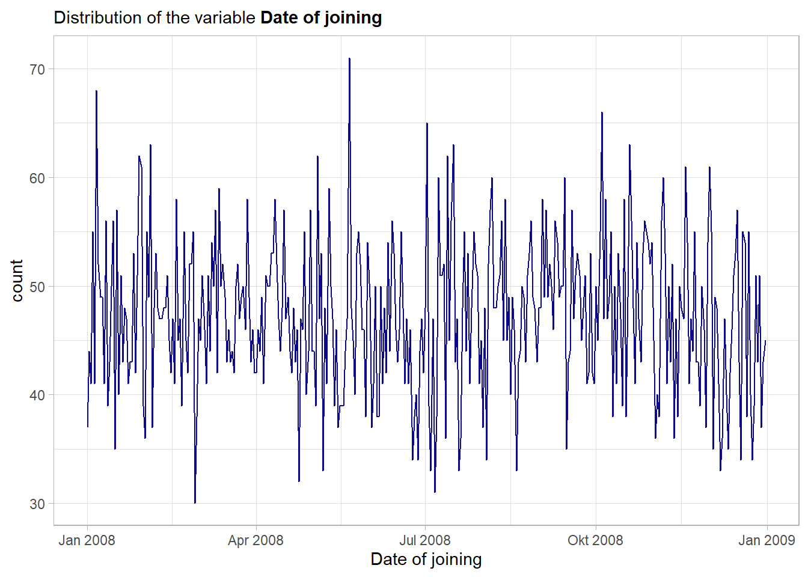
In its raw form the variable date_of_joining seems not to have a notable main effect on the outcome variable. Nevertheless the feature will be used in the model and as tree-based model have an in-built feature selection one can see after the fitting if the feature was helpful overall. The feature will not be included just as an integer (the default format how Dates are represented) but rather some more features like weekday or month will be extracted from the raw variable further down the road.
gender represents the gender of the employee. Definitely a categorical variable.
# have a look at the discrete distribution
summary(factor(burnout_train$gender))## Female Male
## 9101 8200The two classes are well balanced. Now a look at the main effect of the feature.
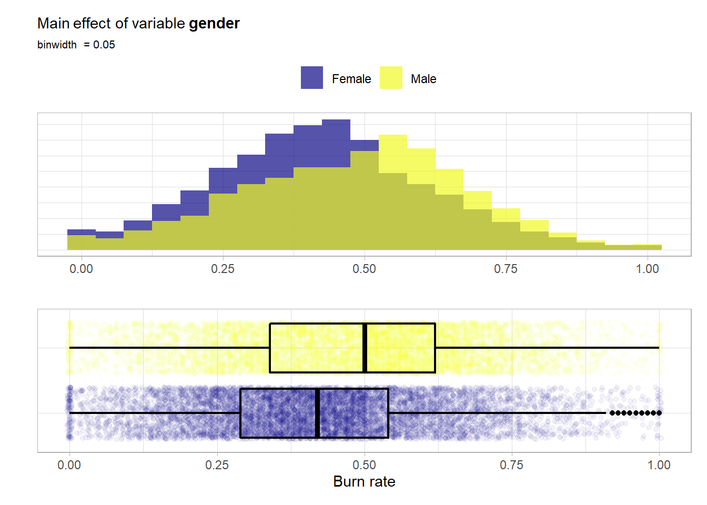
For both classes the distributions are very similar and symmetrical. It seems like the male employees have overall a slightly higher risk of having a higher burn score i.e. a burnout.
company_type is a binary categorical variable that indicates whether the company is a service or product company.
# have a look at the discrete distribution
summary(factor(burnout_train$company_type))## Product Service
## 6018 11283In this case the classes are not fully balanced but each class is still well represented. Now a look at the main effect of the feature.
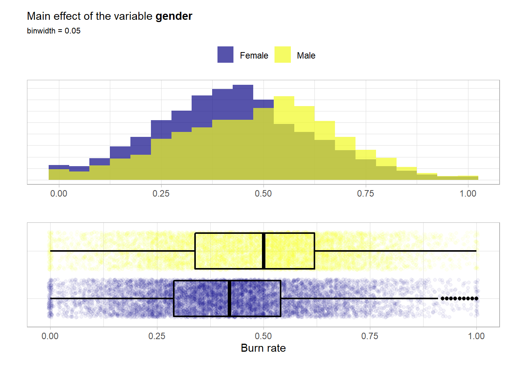
For both classes the distributions are almost identical and symmetrical. From an univariate point of view no notable main effect is visible from these visualizations.
wfh_setup_available indicates whether a working from home setup is available for the employee. So this is again a binary variable.
# have a look at the discrete distribution
summary(factor(burnout_train$wfh_setup_available))## No Yes
## 7929 9372The two classes are well balanced. Now a look at the main effect of the feature.
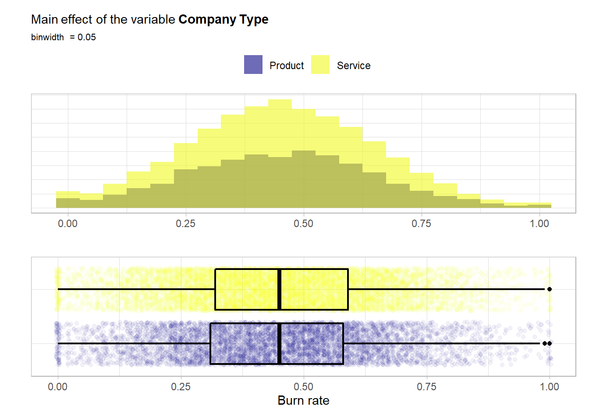 Again both distributions are quite similar i.e. bell shaped and symmetrical. Here quite a main effect is visible. A work from home setup most likely has a positive influence on the wellbeing and thus lowers the risk for a high burn rate.
designation A rate within \([0,5]\) that represents the designation in the company for the employee. High values indicate a greater amount of designation.
# unique values of the feature
unique(burnout_train$designation)## [1] 2 1 3 0 4 5As the feature has a natural encoding this variable will be treated as an ordinal one i.e. be encoded with the integers and not by one-hot-encoding.
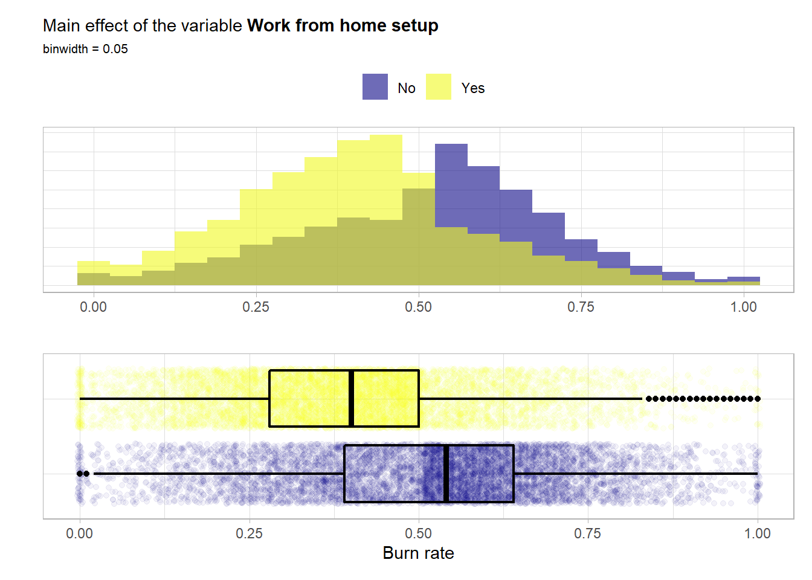
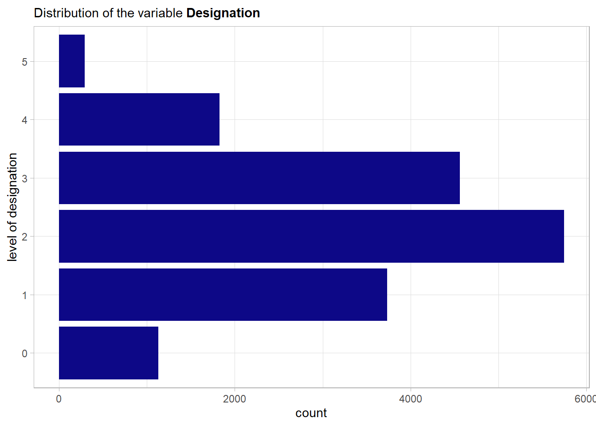
A strong main effect is visible in the plot. The plot also further strengthens the hypothesis that we should treat the feature as ordinal. A higher level of designation seems to have an influence on the risk of having a burnout.
resource_allocation A rate within \([1,10]\) that represents the resource allocation to the employee. High values indicate more resources allocated to the employee.
# unique values of the feature
unique(burnout_train$resource_allocation)## [1] 3 1 7 4 6 5 2 NA 8 10 9Here again the question is whether one should encode this variable as a categorical or an ordinal categorical feature. In this case as there are quite some levels and again a natural ordering the variable will be used as a continuous integer score.
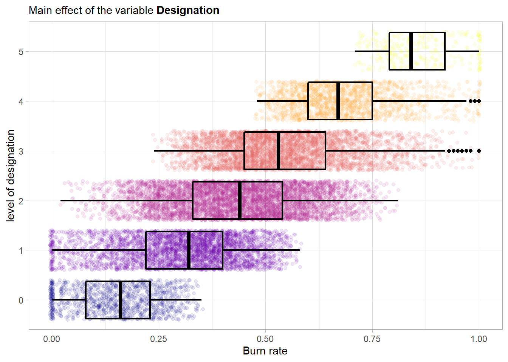
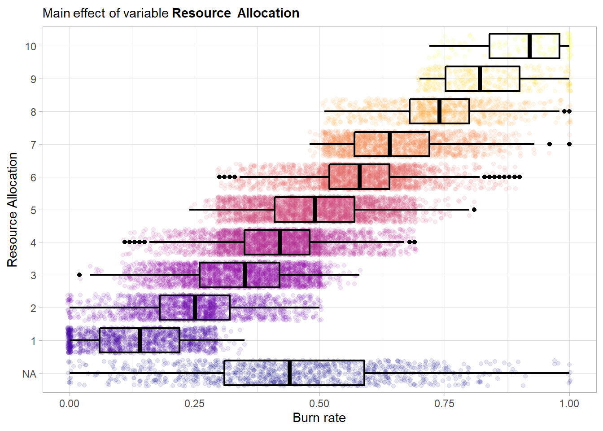 A strong main effect is visible in the plot. The plot again further strengthens the hypothesis that we should treat this feature as ordinal. A higher amount of resources assigned to an employee seems to have a positive influence on the risk of having a burnout.
mental_fatigue_score is the level of mental fatigue the employee is facing.
# number of unique values
length(unique(burnout_train$mental_fatigue_score)) ## [1] 102This variable will be treated in a continuous way.
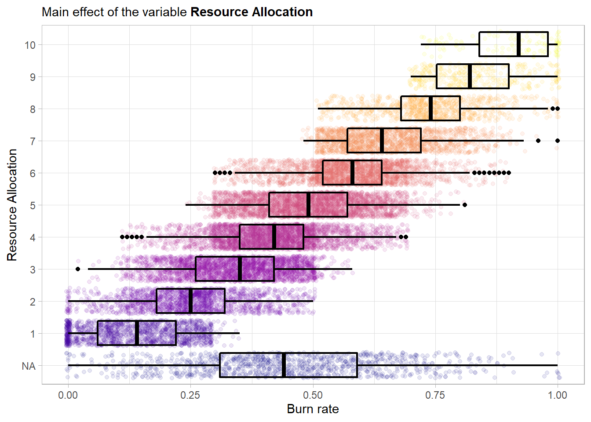 Although there is a very slight skew towards a higher mental fatigue score the overall distribution is still more or less bell shaped and quite symmetrical. Moreover the whole allowed range is covered and the bounds are not violated. Next the main effect of the variable.
This scatterplot shows drastic results! The mental fatigue score has an almost perfect linear relationship with the outcome variable. This is also underlined by the very high pearson correlation. This indicates that mental fatigue score will be a most important predictor. If a communication with the data collector would be possible it would be important to check whether the two scores have common confounding variables as then one would have to question the practical usability of this predictor. This comes from the fact that no model would be needed if it was as hard to collect the data about the predictors as the outcome data. Moreover there are 1555 missing values in the feature so for those the model has to rely on the other maybe more weak predictors. It should be noted that when evaluating the final model one should consider to compare its performance to a trivial model (like a single intercept model). When constructing such a trivial model one could and maybe should also use this variable (when available) to get a trivial prediction by scaling the mental_fatigue_score feature by a simple scalar.
4.1.2 Visualize the data
pair plots
indiviual main effects
correlations
correlation plot
feature engineering
4.1.3 Create recipe
one for lm (dummify categorical features) and one for the tree based approaches
# ames_rec <-
# recipe(Sale_Price ~ Neighborhood + Gr_Liv_Area + Year_Built + Bldg_Type +
# Latitude + Longitude, data = ames_train) %>%
# step_log(Gr_Liv_Area, base = 10) %>%
# step_other(Neighborhood, threshold = 0.01) %>%
# step_dummy(all_nominal()) %>%
# step_interact( ~ Gr_Liv_Area:starts_with("Bldg_Type_") ) %>%
# step_ns(Latitude, Longitude, deg_free = 20)